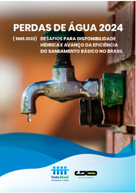

O Instituto Trata Brasil (ITB), organização da sociedade civil que busca a universalização do saneamento no país, em parceria com a consultoria GO Associados, publica o “Estudo de Perdas de Água 2024 (SNIS, 2022): Desafios na Eficiência do Saneamento Básico no Brasil”, que busca expor o grande problema econômico e social da ineficiência no controle de perdas de água em nosso país. O estudo foi elaborado a partir de dados públicos do Sistema Nacional de Informações sobre Saneamento (SNIS, ano-base 2022) e compreende uma análise do Brasil, de suas cinco macrorregiões, das 27 Unidades da Federação e dos 100 municípios mais populosos do país (incluindo as capitais dos estados), que figuraram no Ranking do Saneamento de 2024. Saiba mais no estudo completo.
A Organização das Nações Unidas (ONU) lançou em 2015 os 17 Objetivos de Desenvolvimento Sustentável (ODS), uma agenda de sustentabilidade adotada pelos países-membros da ONU para ser cumprida até 2030. O objetivo de número 6 é “Assegurar a disponibilidade e gestão sustentável da água e saneamento para todos”. Neste objetivo, estão definidas como metas a distribuição de água de forma igualitária para a população mundial, a melhoria da qualidade da água, o fim da defecação a céu aberto e a garantia de saneamento para todos.
As metas também preveem maior reciclagem e reutilização da água, enfatizando que países mais ricos devem oferecer apoio aos países em desenvolvimento em recursos tecnológicos e em atividades como dessalinização e tratamento de água. O objetivo ainda ressalta a importância do envolvimento de comunidades locais na melhoria da gestão de água e saneamento.
Até 2030, alcançar o acesso universal e equitativo a água potável e segura para todos
Até 2030, alcançar o acesso a saneamento e higiene adequados e equitativos para todos, e acabar com a defecação a céu aberto, com especial atenção para as necessidades das mulheres e meninas e daqueles em situação de vulnerabilidade
Até 2030, melhorar a qualidade da água, reduzindo a poluição, eliminando despejo e minimizando a liberação de produtos químicos e materiais perigosos, reduzindo à metade a proporção de águas residuais não tratadas e aumentando substancialmente a reciclagem e reutilização segura globalmente